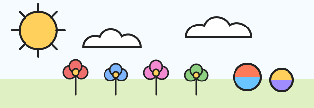

Fall Ready Practice
For a child entering Kindergarten. Work slowly, talk together, and stop while it still feels fun.

Letters
Circle the letters in your name.
A
M
S
T
L
E
R
N
Trace your first letter.
A
A
A
Counting
Count the picture. Write the number.
Flowers
Beach balls
Clouds
Trace the numbers.
1
2
3
4
5
Sounds
Say each word. Color the ones that start with /s/.
sun
bug
sock
cup
Tell an adult one word that rhymes with sun.
Shapes
Draw one circle, one square, and one triangle.
Ready for School
- I can say my first and last name.
- I can count five things.
- I can wait for a turn.
- I can clean up my space.
- I can ask for help.
- I can listen to a short story.
Draw and Tell
Draw something you want to do at school. Tell an adult about your picture.